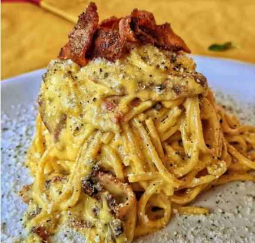

Carbonara Recipe
Home

The dish forms part of a family of dishes consisting of pasta with cured pork, cheese, and pepper, one of which is pasta alla gricia. It is very similar to pasta cacio e uova, a dish dressed with melted lard and a mixture of eggs and cheese, but not meat or pepper. Cacio e uova is documented as far back as 1839 and, according to researchers, anecdotal evidence indicates that some Italians born before World War II associate that name with the dish now known as "carbonara"
- 2 eggs
- guanciale
- Parmigiano-Reggiano
- spaghetti
- Pepper
- Salt
- Cut the guanciale into thick batons.
- Finely grate the parmigiana reggiano or pecorino.
- Whisk together the egg, cheese and pepper in a large bowl. It needs to be a large bowl because the pasta will be stirred into the sauce in the bowl, off the stove, to avoid scrambling the eggs.
- Bring 4 litres (4 quarts) of water to the boil with 1 tablespoon of salt. Cook the pasta per packet directions. It should be firm, not soft, but fully cooked through.
- Just before draining, scoop out one cup of pasta cooking water. Then drain the pasta in a colander.
- Cook guanciale until golden while the pasta is cooking. You don’t need any oil, the guanciale will fry in its own fat.
- Tumble the hot pasta into the pan with the guanciale then toss so the pasta gets coated in the guanciale fat.
- Tip the hot pasta into the bowl with the egg and use a rubber spatula to scrape out every drop of the guanciale fat into the bowl.
- Mix vigorously with the handle of a wooden spoon, spinning the pasta around, for around 30 seconds to 1 minute. Watch as the watery pale yellow liquid magically transforms into a creamy sauce.
- You know it’s ready when the sauce is no longer watery and pooled in the bottom of the bowl. Instead, it will be thickened, creamy, and clinging to the pasta!